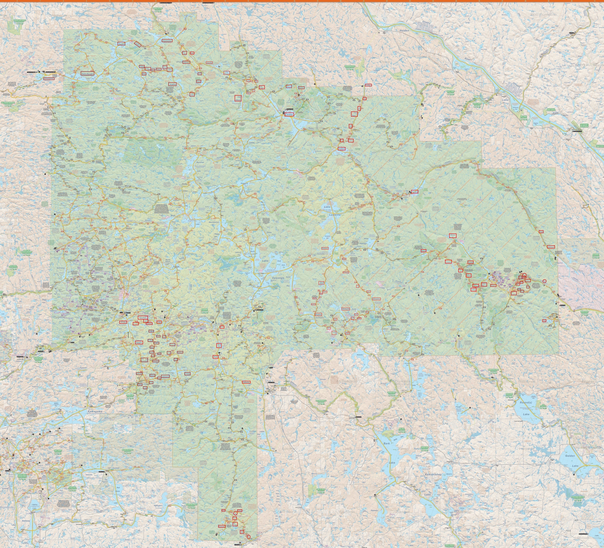

Go To Trips List
Lakes List
Allan Lake
Amabule Du Fond River
Animoosh Lake
Aura Lee Lake
Barron River
Big Red Lake
Big Rock Lake
Big Thunder Lake
Boggy Lake
Booth Lake
Branch Lake
Bridle Lake
Brigham Lake
Bug Lake
Byers Lake
Cache Lake
Carcajou Bay
Carcajou Lake
Carl Wilson Lake
Cauchon Lake
Cedar Lake
Chipmunk Lake
Clamshell Lake
Clemow Lake
Club Lake
Crotch Lake
Dahinda Lake
Dickson Lake
Dove Lake
Erables Lake
Fairy Lake
Farm Lake
Galeairy Lake
Gilmour Lake
Grand Lake
Hidden Lake
High Falls Lake
High Falls Pond
Ironwood Lake
Kearney Lake
Kingscote Lake
Kioshkokwi (Kiosk) Lake
Kitty Lake
Kootchie Lake
Laurel Lake
Little Carcajou Lake
Little Cauchon Lake
Little Cedar Lake
Little Island Lake
Little Mink Lake
Lower Spectacle Lake
Manitou Lake
Maple Lake
Marshy Lake
McKaskill Lake
McManus Lake (Petawawa River)
Mink Lake
Mountain Lake
Mouse Lake
North Depot Lake
North River
North Sylvia Lake
Ooze Lake
Opalescent Lake
Presto Lake
Radiant Lake
Ragged Lake
Ratrap Lake
Rock Lake
Round Island Lake
Round Island Lake
Ryan Lake
Scorch Lake
Sec Lake
Sheriff Pond
Shirley Lake
Shoal Lake
Shrew Lake
Smith Lake (Petawawa River)
Smoke Lake
St. Andrews Lake
Stratton Lake
Upper Spectacle Lake
Tanamakoon Lake
Tecumseh Lake
Three Mile Lake
Lake Traverse (Travers)
Wendigo Lake
Waterclear Lake
Wenda Lake
White Birch Lake
Whitefish Lake
York River